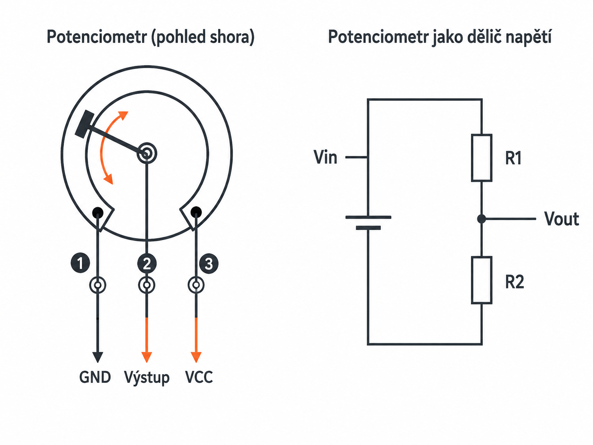
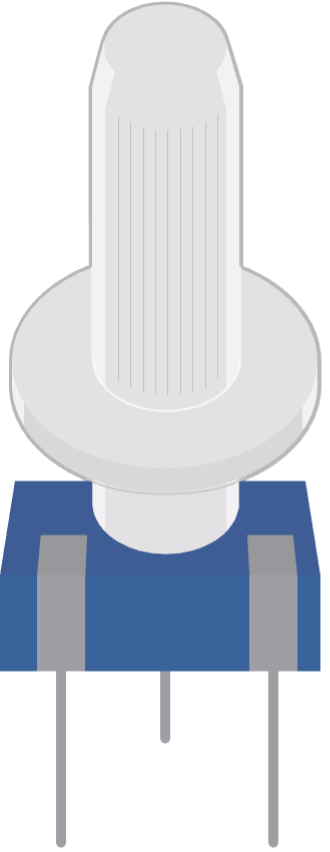

Praxe – Arduino | 3. ročník
V předchozí kapitole jsme ovládali LED diodu pomocí digitálního výstupu. Nyní si vytvoříme jednoduchý semafor se třemi LED: červenou, žlutou a zelenou.
Cíl: Zapojte tři LED diody a vytvořte program, který bude napodobovat činnost běžného semaforu.
Tlačítko může sloužit jako jednoduché vstupní zařízení pro Arduino. Mechanicky je to pružný kontakt, který při stisku propojí dva kontakty. Způsobů zapojení tlačítka je více, ukážeme si ale nejjednodušší variantu, která nevyžaduje žádné další externí součástky.
Jeden pól tlačítka zapojíme na digitální vstup Arduina, například D2. Druhý pól tlačítka zapojíme na GND.
V programu nastavíme vstup pomocí režimu INPUT_PULLUP:
pinMode(2, INPUT_PULLUP);Arduino má uvnitř takzvaný pull-up rezistor s přibližnou hodnotou 20 až 50 kΩ. Tento rezistor je zapojený mezi digitální pin a napájecí napětí +5 V.
Pokud je pull-up rezistor aktivní a tlačítko není stisknuté, pin je v logické úrovni HIGH. Po stisknutí tlačítka se pin spojí s GND a Arduino přečte logickou úroveň LOW.
Pozor na obrácenou logiku:
Stisknuté tlačítko = LOW
Nestisknuté tlačítko = HIGH
Cíl: Zapojte tlačítko jako digitální vstup a vytvořte program, který rozsvítí LED pouze po dobu, kdy je tlačítko stisknuté.
Digitální signál je nespojitý a má pouze omezený počet stavů, například logickou nulu a jedničku. Analogový signál je naopak spojitý a může v čase nabývat mnoha různých hodnot.
Příkladem analogového signálu může být napětí z potenciometru, teplotního čidla nebo mikrofonu.
Má přesně určené úrovně, například 0 V a 5 V.
Je plynulý a může se měnit mezi minimální a maximální hodnotou.
Pro měření digitálního stavu můžeme použít běžné digitální piny. Pro měření analogového napětí ale používáme pouze analogové piny A0 až A5.
Pro měření napětí použijeme funkci analogRead(). Jako argument funkce zadáme číslo pinu, na kterém chceme měřit.
int napeti = analogRead(A4);Arduino má 10bitový A/D převodník, což znamená, že dokáže rozlišit 210 = 1024 úrovní napětí.
Například pokud analogRead() vrátí hodnotu 724, vypočítáme napětí takto:
Napětí na vstupu je tedy přibližně 3,53 V.
int hodnota = analogRead(A0);
float napeti = hodnota * 5.0 / 1023.0;
Serial.print("Napeti: ");
Serial.print(napeti);
Serial.println(" V");Potenciometr je nastavitelný rezistor se třemi vývody. Dva krajní vývody připojujeme na napájení a zem. Střední vývod, označovaný jako jezdec, poskytuje proměnné napětí pro analogový vstup Arduina.
Uvnitř potenciometru je odporová dráha a pohyblivý kontakt, kterému říkáme jezdec nebo stěrač. Jezdec se při otáčení knoflíkem pohybuje po odporové dráze.
Polohou jezdce se mění poměr odporu mezi středním a krajními vývody. Na středním vývodu proto získáme napětí odpovídající aktuálnímu natočení potenciometru.
Otáčením potenciometru měníme napětí na středním vývodu. Arduino toto napětí přečte funkcí analogRead() a hodnotu můžeme využít například pro řízení jasu LED nebo rychlosti blikání.


Zapojte potenciometr jako dělič napětí. Jeden krajní vývod připojte na 5 V, druhý krajní vývod na GND a střední vývod – jezdec – na analogový vstup A0. Pro práci s LED použijte vestavěnou LED označenou LED_BUILTIN.